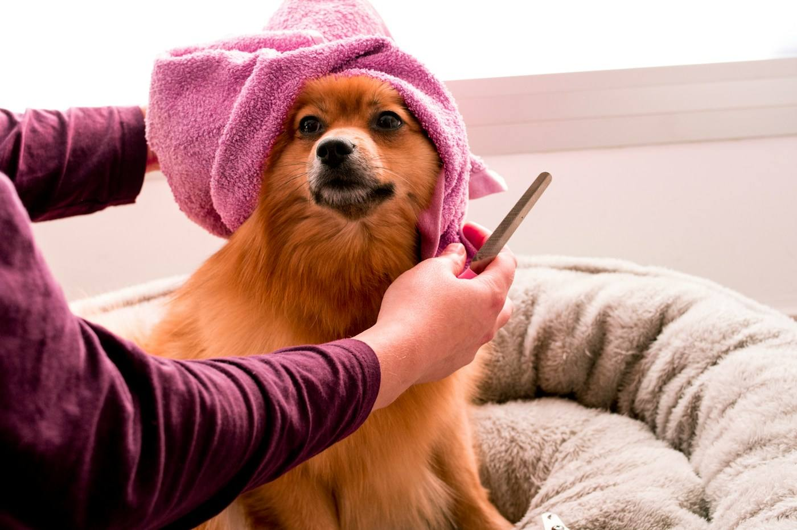
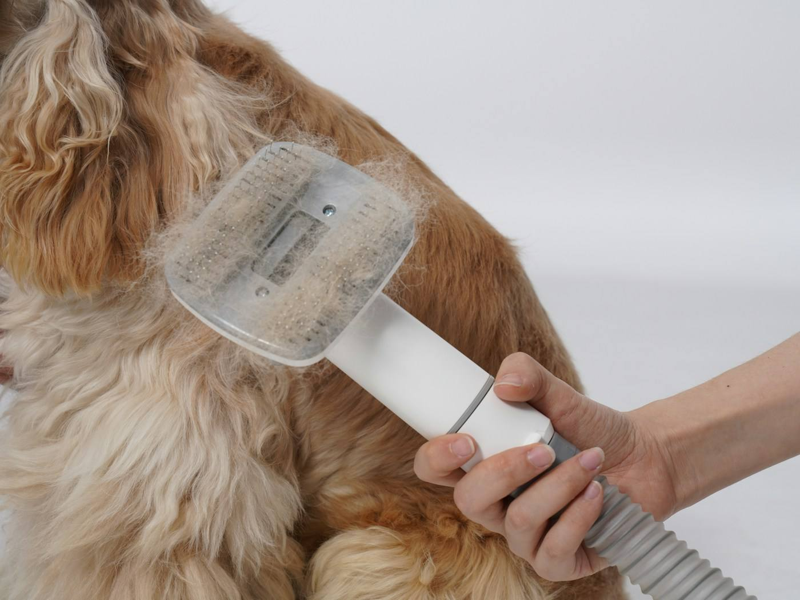

Bain, coupe et séchage dans un salon de quartier, route de Brest. Votre animal est pris en charge sur rendez-vous.

Lavage adapté au pelage et à la peau de l'animal.
Tonte, coupe aux ciseaux ou simple entretien selon la race et vos envies.
Séchage et brossage pour un poil propre et démêlé.
Le salon accueille les chiens de toutes tailles et les chats.

Chaque animal a son rythme. Appelez le salon pour fixer un créneau et préciser la race, la taille et l'état du pelage : la durée et le soin seront adaptés.